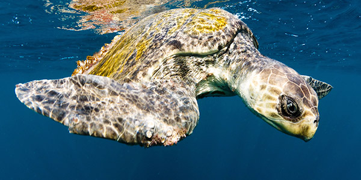

Sea Turtles
This page will talk all about Sea Turtle.
These are turles who spend their time swimming in our oceans.
Other then to lay their eggs, they live entirely in water.
Come learn about some of the exciting different types of sea turtles!
Green Sea Turtles

This species of turtles live in all tropical and subtropical waters. It is found in the Indian Ocean, the Atlantic Ocean and the Pacific Ocean. They spend most of their time in shallow water, eating sea grass. They are a herbivoric species of turtles as adults. However, young turtles are carnivoric; eating worms, sponges, jellyfish, eggs and other animals. They are currently endagered (oh no!).
They often have different nesting and feeding sites.
Some will swim over 1600 miles to lay their eggs.
Halksbill Sea Turtles
This species of sea turtle gets its name from its appearance. Its mouth looks like the beak of a halk. It is critically endagered. They are heavily hunted by humans. Many conservation groups work on protecting this species. They are generally 3 feet long at full length. The weigh around 280 pounds. They live between 30 to 50 years. This type of turtle is the only one known to eat sea sponges in Hawaii.
Hawksbill turtles return to the beach they were hatched
from to lay their eggs. They lay around 140 eggs during each lay.
Leatherback Sea Turtles
The leatherback sea turtle is the largest turtle in the world! They can get over 7 feet long. They swim in all the oceans except the arctic ocean. They get their name by having a softer more leather like back (compared to most other turtles). Their diet consists almost entirely on jellyfish. They sometimes mistake pastic bags for jellyfish which has lead to a decline in the population.
They can drive down 4200 feet into the ocean!
This is deeper than any other turtle species.
Olive Ridley Turtles
This is a relativly small species of sea turtle. They are about 2 feet long weigh around 110 pounds. They live in tropical warm waters. They have a carnivorous diet, eating only meat. Their eggs are often eaten by pigs and dogs. This turtle gets its name from its olive color. They live for about 50 to 60 years and can swim into depths of around 500 feet.
They can sleep underwater for about 2 hours.
afterwards they must come up for air.